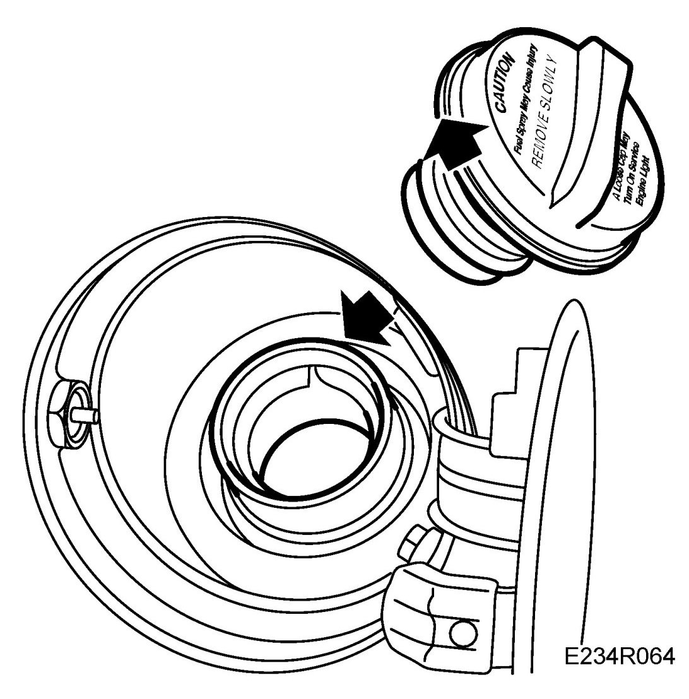
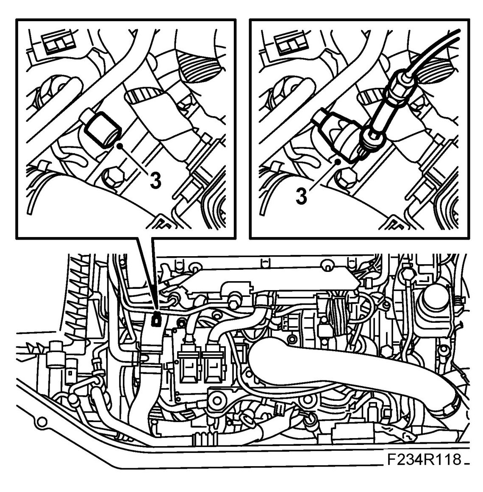
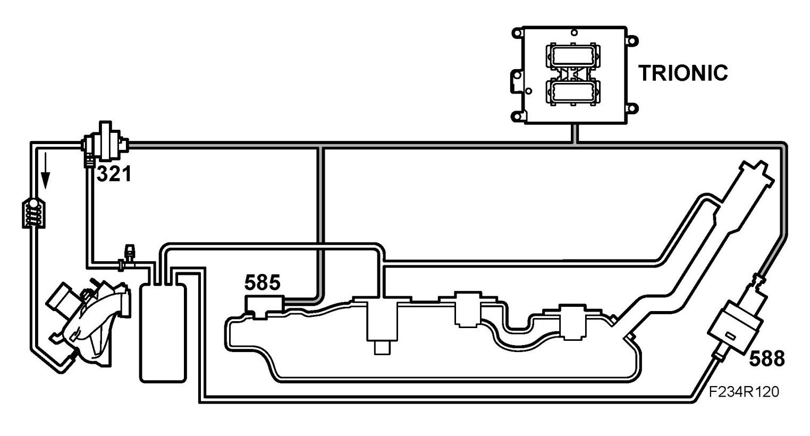

Component Tests and General Diagnostics
Checking For Leaks In The Evaporative Emission System
Checking for leaks
1. Check that the pressure tester is in good condition and not leaking.
2. Check that the filler cap is on tight.

3. Connect pressure tester J41413 to the service port at the purge valve in the engine compartment.
NOTE: Do not fit the pressure tester adapter to the filler cap connection, as this would prevent the filler cap from sealing in its correct position.

4. Activate the EVAP canister cut-off valve using the diagnostic tool.
- Select the "ACTIVATE" menu.
- Select "TANK BLEEDING OFF/ON".
- Select "ON"
5. Pressurize the system and perform the pressure test, following the instructions in the Kent-Moore manual.
Action to be taken if leak detected

1. The cut-off valve shall remain activated.
2. Detach the line from the EVAP canister purge valve at the intake manifold.
3. Raise the pressure again, following the instructions in the Kent-Moore manual.
4. Use ultrasonic leak detector J41416 to trace the leak. Start with the line that has been disconnected from the intake manifold and then follow the system lines and components. Make a visual check of the system at the same time.
NOTE:
- In order to check for leaks in components on the top of the fuel tank, it may be necessary to lower the tank a bit.
- Leak detection listening equipment is sensitive to ambient noise, such as exhaust outlet, airdriven machines, use of blower nozzles, leaking pressurized air connections, etc.
- Airflow from the ventilation equipment in the workshop can also affect the equipment.
- All of the items mentioned can cause a similar, but incorrect indication/detection of a leak in the EVAP system.
5. Therefore, always adjust the sensitivity of the ultrasonic leak detector, so that the ambient noise, which often causes interference, is filtered out.
NOTE:
- A larger leak, such as a faulty cut-off valve or a loose line, is difficult to detect as it does not give off the "right noise" to be detected by the ultrasonic leak detector.
- For this reason, it is essential that you make a thorough visual inspection of the system components, to check for leaks not detected by the equipment.
6. Rectify any leaks detected and test the system again.
7. Restore the car to its normal condition.